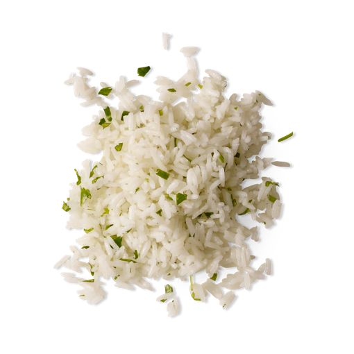

<!DOCTYPE html>
<html lang="en">
<head>
    <meta charset="UTF-8">
    <link rel="stylesheet" href="styles.css">
</head>
<body>
    
</body>
</html>
<h2>Chipotle White Rice</h2>


<h4><em>Description</em></h4>
<p>Former chipotle employee white rice recipe.</p>

<h4><em>Ingredients</em></h4>
<ol>
    <li>White Long Grain Rice: 2 Cups</li>
    <li>Water: 3 Cups</li>
    <li>Bay Leaf: One</li>
    <li>Minced Cilantro: 1/2 Cup</li>
    <li>Kosher Salt: 1/2 Teaspoon</li>
    <li>Lime Juice: 1/2 Teaspoon</li>
    <li>Lemon Juice 1/2 Teaspoon</li>
    <li>Rice bran oil: 2 Tablespoons</li>
</ol>

<h4><em>Steps</em></h4>

<a href="https://www.youtube.com/watch?v=THxUIqQQrYM" class="btn video" target="_blank" rel="noopener noreferrer">video</a>
<!-- <a href="https://www.youtube.com/watch?v=THxUIqQQrYM" target="_blank" rel="noopener noreferrer">click here</a> -->


